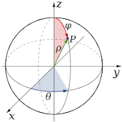

Lección
- 💪 Persevera y alcanzarás
- El éxito es tuyo
Introducción
Bienvenido al curso de Geometría Analítica, iniciaremos nuestro curso indicando la forma de trabajo.
- Estudia el video correspondiente tomando los apuntes necesarios en tu cuaderno (para tomar tus apuntes pausa el video las veces que sea necesario).
- Si la tarea contiene textos, también debes realizar apuntes de ellos.
- Una vez comprendido el tema, realiza en tu cuaderno las actividades necesarias, haciendo clic en la página siguiente.
- Continua con este proceso, ver video o apuntes, escribir tu resumen, realizar actividades, hasta terminar la lección.
- Finalmente realiza el cuestionario si lo hay.
- Has concluido con tu trabajo de la semana felicidades.
- Continua con la siguiente semana.
Da clic en la página 2 de la parte superior, para continuar
Definición de geometría analítica y recta ordenada.
- Estudia el video, tomando los apuntes pertinentes en tu cuaderno.
- Una vez comprendido el tema, da clic en la página 3 para realizar tus actividades.
- No olvides al terminar la semana pasar tus apuntes y actividades a un solo archivo PDF y subirlo a la plataforma en la zona correspondiente.
Da clic en la página 3 de la parte superior, para continuar
Actividad 1 de la semana
Una vez comprendido el tema y después de haber tomado los apuntes pertinentes en tu cuaderno, realiza lo siguiente:
Grafica en una línea recta lo siguiente:
- M(\( \frac{3}{9} \))
- N(\( -\frac{12}{5} \))
- A(\( 3.5 \))
- W(\( -2.7 \))
- B(\( -\frac{5}{8} \))
- C(\( 2 \frac{3}{6} \))
- D(\( -0.6 \))
- E(\( -3\frac{7}{9} \))
- F(\( 4.3 \))
- G(\( -\frac{2}{10} \))
Da clic en la página 4 de la parte superior, para continuar
Distancia entre dos puntos en la recta ordenada
- Estudia el video, tomando los apuntes pertinentes en tu cuaderno.
- Una vez comprendido el tema, da clic en la página 5 para realizar tus actividades.
- No olvides al terminar la semana pasar tus apuntes y actividades a un solo archivo PDF y subirlo a la plataforma en la zona correspondiente.
Da clic en la página 5 de la parte superior, para continuar
Actividad 2 de la semana
Una vez comprendido el tema y después de haber tomado los apuntes pertinentes en tu cuaderno, realiza lo siguiente:
Calcula la distancia entre los siguientes puntos, realiza un dibujo en el plano cartesiano por cada ejercicio:
- \(De \; M(-3) \; a \; N(8) \)
- \( De \; A(-12) \; a \; B(-15) \)
- \( De \; Z(12) \; a \; W(23) \)
- \( De \; C(\frac{3}{7}) \; a \; D(-3\frac{2}{7})\)
- \( De \; A(\frac{3}{9}) \; a \; B(\frac{5}{7}) \)
Da clic en la página 6 de la parte superior, para continuar
Plano cartesiano
- Estudia el video, tomando los apuntes pertinentes en tu cuaderno.
- Una vez comprendido el tema, da clic en la página 7 para realizar tus actividades.
- No olvides al terminar la semana pasar tus apuntes y actividades a un solo archivo PDF y subirlo a la plataforma en la zona correspondiente.
Da clic en la página 7 para continuar
Actividad 3 de la semana
Una vez comprendido el tema y después de haber tomado los apuntes en tu cuaderno, realiza lo siguiente:
1. Grafica en el plano cartesiano los siguientes puntos (cada inciso en un plano diferente):
- M( \( \frac{3}{5}, -2 \) ); N\((-5, 3)\); W\((-\frac{2}{3}, -\frac{5}{7})\)
- \(A(3, 5); \; B(-2, 4); \; C(-3, -5); \; D(4, -5) \)
- \(M(\frac{4}{3}, \frac{3}{5}); \; N(-2\frac{3}{7}, \frac{4}{7}); \; O(-\frac{3}{4}, \frac{5}{3})\)
2. En el plano cartesiano, dibuja el triángulo formado por los siguientes puntos: \( A(2, -3); \; B(-3, 4) \) y \( C(-2, -5) \)
3. En el plano cartesiano, dibuja el cuadrilátero formado por los siguientes puntos:
\( P(\frac{2}{5}, \frac{5}{3}); \; Q(-2\frac{3}{4}, \frac{9}{4}); \; R(3\frac{1}{2}, -\frac{7}{3}) \) y \(S(-2, -3) \)
Da clic en la página 8 para continuar
Cierre
Felicidades has terminado tu lección. No olvides:
- Convertir los apuntes y actividades del cuaderno en un solo archivo PDF.
- Subir tu trabajo en la plataforma en tiempo y forma.
- Realiza el cuestionario de la semana, si lo hay.
- Continuar con la siguiente semana.